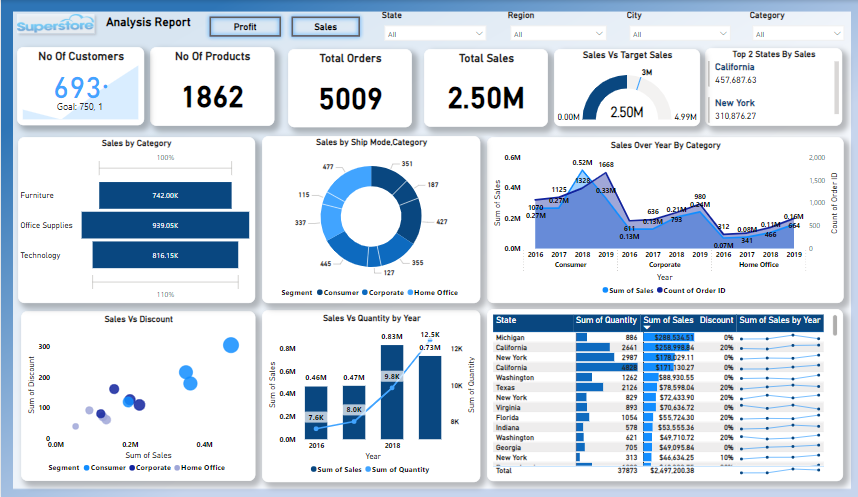
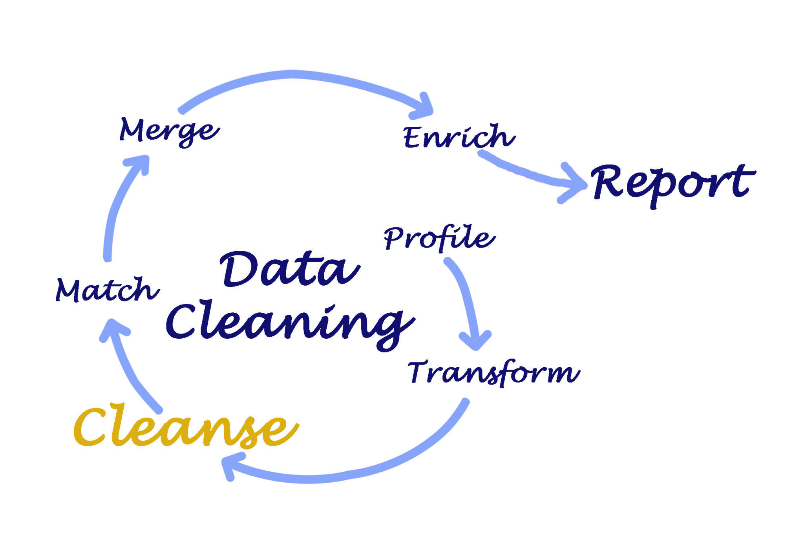

Here i have shown how i utilized Power BI advanced concept Bookmarks to leverage the superstore data to show two different scenarios by Grouping & over lapping each other to reduce space as per business requirement of single page report.

In this project i have shown how i utilize Microsoft Fabric platform to pull on-premises data to cloud by creating Gateway,Datapipeline,Dataflow Gen 2,Schedule refresh to show real time data.

Layoff due to restructuring:
The company has undergone changes in its organizational structure or operations, Which have led to the removal of certain employees.
Board decided that employees those service years exceed 18 will be terminated.

Exploratory Data Analysis
Find Head count,Gender distribution,Age band
Termination count,Over the period hire & termination netchange.
